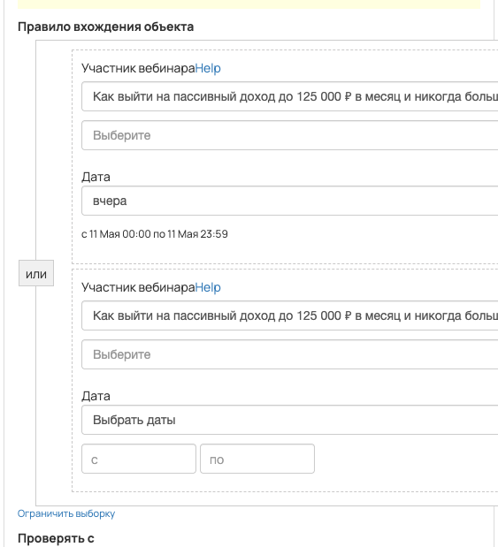
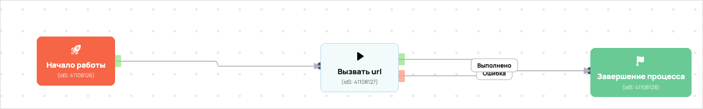

[AMO] [ED] Антивеб (отдел доведения) 95153
- ID процесса:
2370193 - Объект: Пользователи
- Статус: Активен
- Внутренняя страница: 2370193. [AMO] [ED] Антивеб (отдел доведения) 95153
- GetCourse: Карточка | Схема процесса
Скриншоты процесса


Коротко для заказчика
- Главное: В процесс попадают пользователи по правилу: Участник вебинара или Участник вебинара.
- Дальше он передает данные как: Формы и анкеты.
- Связанных баз Vakas: 1.
Понятное описание процесса
- Процесс работает с объектом GetCourse: Пользователи. Текущий статус процесса: Активен.
- На вход попадают данные так: В процесс попадают пользователи по правилу: Участник вебинара или Участник вебинара.
- Дополнительные условия внутри схемы не извлечены: процесс идет напрямую по основной ветке или условия не подписаны.
- Дальше процесс делает прямые вызовы Vakas: 1. Напрямую задействованы базы: 95153.
- Передача: 95153. Антивеб (отдел доведения): Формы и анкеты. Передаются параметры:
name,email,phone,getcourse_user_id,utm_source,utm_medium,utm_campaign,utm_content,utm_term,comments. - Что происходит в amoCRM: На входе в этап ОТДЕЛ - ДОВЕДЕНИЯ -> Антивеб [83423230] база ищет дубль и при необходимости переводит найденную сделку в рабочий этап.
Ход процесса в GetCourse
- Схема состоит из 5 блоков и 7 переходов.
- По типам: стартов 1, условий/ожиданий 0, вызовов URL 3, изменений полей 0, финалов 1.
Блоки процесса: что делают и зачем нужны:
- Блок
41108126«Начало работы» (старт). Что делает: Запускает выполнение схемы для объекта, который попал под правило входа процесса. Зачем нужен: Нужен как точка входа: от него GetCourse начинает движение объекта по схеме. Дальше: если результат «Выполнено», идет в «Вызвать url». - Блок
41108127«Вызвать url» (вызов URL). Что делает: Передает в Vakas: 95153. Антивеб (отдел доведения), канал «Формы и анкеты» (POST); параметры:name,email,phone,getcourse_user_id,utm_source,utm_medium,utm_campaign,utm_content,utm_term,comments; timeout 300 сек. Зачем нужен: Нужен, чтобы передать подходящий объект в 95153. Антивеб (отдел доведения); дальше На входе в этап ОТДЕЛ - ДОВЕДЕНИЯ -> Антивеб [83423230] база ищет дубль и при необходимости переводит найденную сделку в рабочий этап. Дальше: если результат «Ошибка», идет в «n8n fail после Вызвать url #41108127»; если результат «Выполнено», идет в «n8n success после Вызвать url #41108127». - Блок
43528030«n8n success после Вызвать url #41108127» (вызов URL). Что делает: Пишет событие в n8n: success, action vakas_users (POST); параметры:event,clientED,gcDomain,action,process_id,process_name,entity_type,object_id,user_id,name,email,phone,error_message; timeout 10 сек. Зачем нужен: Нужен для фиксации успешной отправки: n8n получает событие, что Vakas-вызов отработал без ошибки. Дальше: если результат «Ошибка», идет в «Завершение процесса»; если результат «Выполнено», идет в «Завершение процесса». - Блок
41108128«Завершение процесса» (завершение). Что делает: Завершает ветку процесса после выполненных проверок и действий. Зачем нужен: Нужен, чтобы закрыть текущую ветку и не гонять объект по процессу повторно. Дальше переходов нет: это конечная точка ветки. - Блок
43528036«n8n fail после Вызвать url #41108127» (вызов URL). Что делает: Пишет событие в n8n: fail, action vakas_users (POST); параметры:event,clientED,gcDomain,action,process_id,process_name,entity_type,object_id,user_id,name,email,phone,error_message; timeout 10 сек. Зачем нужен: Нужен для контроля ошибки: n8n получает данные неуспешной отправки, чтобы можно было увидеть проблему и повторить/разобрать передачу. Дальше: если результат «Ошибка», идет в «Начало работы»; если результат «Выполнено», идет в «Начало работы».
Что именно входит в процесс
- В процесс попадают пользователи по правилу: Участник вебинара или Участник вебинара.
Как именно настроено правило
- Участник вебинара или Участник вебинара
Куда и как передается дальше
| База Vakas | Что передается | Этап в amoCRM | Что происходит со сделкой |
|---|---|---|---|
| 95153. Антивеб (отдел доведения) | Формы и анкеты | ОТДЕЛ - ДОВЕДЕНИЯ -> Антивеб [83423230] | На входе в этап ОТДЕЛ - ДОВЕДЕНИЯ -> Антивеб [83423230] база ищет дубль и при необходимости переводит найденную сделку в рабочий этап. |